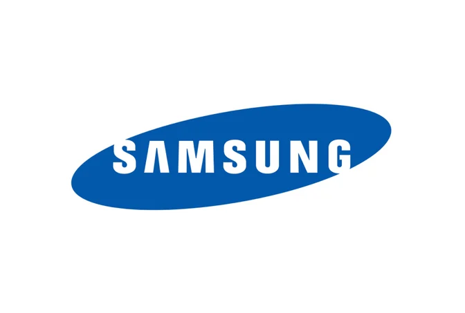
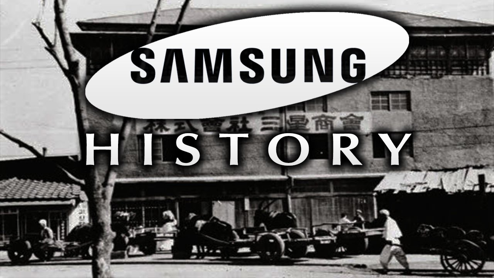

Head info
Samsung Group (Korean: 삼성; Hanja: 三星; RR: samseong
[samsʌŋ]; stylised as SΛMSUNG) is a South Korean multinational manufacturing conglomerate
headquartered in Samsung Digital City, Suwon, South Korea. It comprises numerous affiliated
businesses, most of them united under the Samsung brand, and is the largest South Korean chaebol
(business conglomerate). As of 2024, Samsung has the world's fifth-highest brand value.
Samsung was founded by Lee Byung-chul in 1938 as a trading company. Over the next three decades, the
group diversified into areas including food processing, textiles, insurance, securities, and retail.
Samsung entered the electronics industry in the late 1960s and the construction and shipbuilding
industries in the mid-1970s; these areas would drive its subsequent growth. Following Lee's death in
1987, Samsung was separated into five business groups – Samsung Group, Shinsegae Group, CJ Group,
Hansol Group, and JoongAng Group.
Samsung industrial affiliates include Samsung Electronics, Samsung Heavy Industries, Samsung
Engineering and Samsung C&T Corporation. Other subsidiaries include Samsung Life Insurance and Cheil
Worldwide. Notable Samsung industrial affiliates include Samsung Electronics (the world's largest
information technology company, consumer electronics maker and chipmaker measured by 2017
revenues), Samsung Heavy Industries (the world's second largest shipbuilder measured by 2010
revenues), and Samsung Engineering and Samsung C&T Corporation (respectively the world's 13th and
36th largest construction companies). Other notable subsidiaries include Samsung Life Insurance
(the world's 14th largest life insurance company), Samsung Everland (operator of Everland Resort,
the oldest theme park in South Korea) and Cheil Worldwide (the world's 15th largest advertising
agency, as measured by 2012 revenues).
History

1938–1970:
In 1938, during Japanese-ruled Korea, Lee Byung-chul (1910–1987) of a large landowning family in
the Uiryeong county moved to nearby Daegu and founded Mitsuboshi Trading Company (株式会社三星商会
(Kabushiki gaisha Mitsuboshi Shōkai)), or Samsung Sanghoe (주식회사 삼성상회). Samsung started out as a
small trading company with forty employees located in Su-dong (now Ingyo-dong).[16] It dealt in
dried fish, locally-grown groceries and noodles. The company prospered and Lee moved its
head office to Seoul in 1947. When the Korean War broke out, he was forced to leave Seoul. He
started a sugar refinery in Busan named Cheil Jedang. In 1954, Lee founded Cheil Mojik, a
textiles company, and built the first plant in Chimsan-dong, Daegu. It was the largest woollen
mill in the country at the time of construction.
Samsung diversified into many different areas. Lee sought to establish Samsung as a leader in a
wide range of industries. Samsung moved into lines of business such as insurance, securities,
and retail.
In 1947, Cho Hong-jai, the Hyosung group's founder, jointly invested in a new company called
Samsung Mulsan Gongsa, or the Samsung Trading Corporation, with the Samsung's founder Lee
Byung-chul. The trading firm grew to become the now Samsung C&T Corporation. After a few years,
Cho and Lee separated due to differences in management style. Cho wanted a 30 equity share.
Samsung Group was separated into Samsung Group and Hyosung Group, Hankook Tire and other
businesses.
In the late 1960s, Samsung Group entered the electronics industry. It formed several
electronics-related divisions, such as Samsung Electronics Devices, Samsung Electro-Mechanics,
Samsung Corning and Samsung Semiconductor & Telecommunications, and opened the facility in
Suwon. Its first product was a black-and-white television set. Byung-chul was also the owner
of the Tongyang Broadcasting Company, a private radio and television company that existed from
1964 to 1980, shut down after the Korean government reviewed the number of media outlets
allowed. TBC allowed an early success thanks to its connections to Samsung, boosting the
sale of its television sets.
2000–present:
In 2000, Samsung R&D opened a development center in Warsaw, Poland. Its work began with
set-top-box technology before moving into digital TV and smartphones. The smartphone platform
was developed with partners, officially launched with the original Samsung Solstice line of
devices and other derivatives in 2008, which was later developed into Samsung Galaxy line of
devices including Notes, Edge and other products.
The Samsung Group's chairman, Lee Kun-hee (left), with South Korean President Park Geun-hye,
2013
In 2007, former Samsung chief lawyer Kim Yong Chul claimed that he was involved in bribing and
fabricating evidence on behalf of the group's chairman, Lee Kun-hee, and the company. Kim said
that Samsung lawyers trained executives to serve as scapegoats in a "fabricated scenario" to
protect Lee, even though those executives were not involved. Kim also told the media that he was
"sidelined" by Samsung after he refused to pay a $3.3 million bribe to the U.S. Federal District
Court judge presiding over a case where two of their executives were found guilty on charges
related to memory chip price-fixing. Kim revealed that the company had raised a large number of
secret funds through bank accounts illegally opened under the names of up to 1,000 Samsung
executives – under his own name, four accounts were opened to manage 5 billion won.
In 2010, Samsung[who?] announced a ten-year growth strategy centered around five businesses.
One of these businesses was to be focused on biopharmaceuticals, to which has committed ₩2.1
trillion. In first quarter of 2012, Samsung Electronics became the world's largest mobile
phone maker by unit sales, overtaking Nokia, which had been the market leader since
1998.
On 24 August 2012, nine American jurors ruled that Samsung Electronics had to pay Apple $1.05
billion in damages for violating six of its patents on smartphone technology. The award was
still less than the $2.5 billion requested by Apple. The decision also ruled that Apple did not
violate five Samsung patents cited in the case. Samsung decried the decision saying that the
move could harm innovation in the sector. It also followed a South Korean ruling stating
that both companies were guilty of infringing on each other's intellectual property. In
first trading after the ruling, Samsung shares on the KOSPI fell 7.7%, the largest fall since 24
October 2008, to 1,177,000 South Korean won. Apple then sought to ban the sales of eight
Samsung phones (Galaxy S 4G, Galaxy S2 AT&T, Galaxy S2 Skyrocket, Galaxy S2 T-Mobile, Galaxy S2
Epic 4G, Galaxy S Showcase, Droid Charge and Galaxy Prevail) in the United States, but this was
denied by the court.
As of 2013, the Fair Trade Commission of Taiwan is investigating Samsung and its local Taiwanese
advertising agency for false advertising. The case was commenced after the commission received
complaints stating that the agency hired students to attack competitors of Samsung Electronics
in online forums. Samsung Taiwan made an announcement on its Facebook page in which it
stated that it had not interfered with any evaluation report and had stopped online marketing
campaigns that constituted posting or responding to content in online forums.
In 2015, Samsung has been granted more U.S. patents than any other company. The company received
7,679 utility patents through 11 December.
The Galaxy Note 7 smartphone went on sale on 19 August 2016. However, in early September
2016, Samsung suspended sales of the phone and announced an informal recall. This action was
taken after some units of the phones were found to have batteries with a defect that caused them
to generate excessive heat, leading to fires and explosions. Samsung replaced the recalled units
of the phones with a new version. However, it was later discovered that the new version of the
Galaxy Note 7 also had the battery defect. Consequently, Samsung recalled all Galaxy Note 7
smartphones worldwide on 10 October 2016 and permanently ceased production of the phone the
following day.
In 2018, they inaugurated the world's largest mobile manufacturing facility in Noida, India, in
the presence of Indian Prime Minister Narendra Modi and South Korean President Moon
Jae-in.
In 2023, Samsung announced its decision to reduce the production of memory chips. This action is
on account of the company's projected 96% decline in quarterly operating profit - a 600 million
won decline from the 14 trillion won in 2022. The said drop can be attributed to the weak demand
after COVID and a slowing global economy. Despite this decision, the company's shares increased
by more than 4%. Samsung has been the top two applicant for PCT filled patents in 2022 and
2023 worldwide.